Решение дифференциальных уравнений методом прогонки
Практическая часть
Теоретическая часть
В данном приложении метод прогонки используется для решения краевой задачи для обыкновенного дифференциального уравнения(ДУ).Краевая задача - задача отыскания частных решений ДУ на [a;b], в которой дополнительные условия назначения искомой функции накладываются в более чем одной точке.
Постановка задачи: Пусть на [a;b] требуется найти решение ДУ второго порядка:
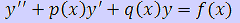
Краевые условия:
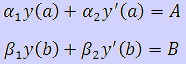
Краевые условия представляют собой линейные комбинации значений функции и ее производных.
Численное решение краевой задачи состоит в нахождении 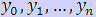 функции у(х) в точках 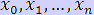. Для решения используем метод прогонки.
Метод прогонки – частный случай метода Гаусса. Запишем систему: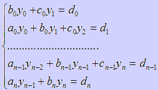
Будем предполагать, что в этой системе имеется диагональное преобладание. В этом случае, система имеет единственное решение, а метод устойчив к погрешностям округления.
Прямой ход:
Заключается в исключении элементов аi в системе. Разрешим первое уравнение относительно y0: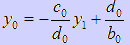
Подставив y0 во второе уравнение начальной системы и разрешив полученное уравнение относительно y1, получим уравнение,
связывающее y1 и y2 и т.д.
Пусть уже получено соотношение:
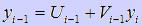
Подставим значение yi-1 в i-тое уравнение системы:
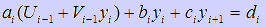
И выразим yi:
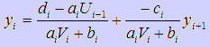
Сравнивая уравнения,полученные на предыдущих этапах, получим рекуррентные формулы для вычисления коэффициентов Ui и Vi в прямом ходе:
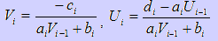
Коэффициенты Ui и Vi, вычисляемые по этим формулам, называются прогоночными, а процесс их нахождения – прямой прогонкой.
Прямой ход прогонки состоит в последнем вычислении коэффициентов Ui и Vi, исходя из значений:

Обратный ход:
Осуществляется по рекуррентной формуле последовательно вычисляя остальные величины. Все формулы в методе прогонки являются рекуррентными, поэтому они просто программируются.Практическая часть
Пошаговые действия |
Пояснения к действиям |
| 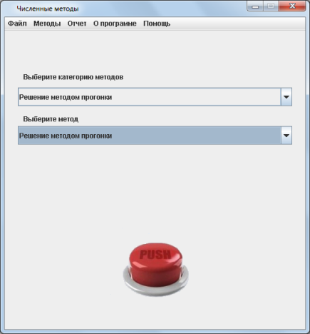 | 1. Заходим в программу. Появляется окно, показанное на рисунке. Выбираем категорию методов "Решение методом прогонки". Метод выбирается автоматически, так как он единственный. Нажимаем кнопку "PUSH". |
| 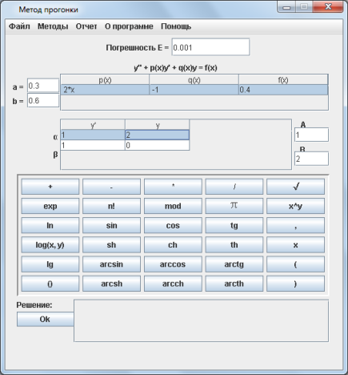 | 2. Появляется окошко, показнное на рисунке слева. Вверху экранной формы жирным шрифтом написано в общем виде
дифференциальное уравнение второго порядка. Исходя из краевой задачи и краевых условий
вводим в соответствующие поля все необходимые данные. Будьте внимательны при вводе данных!
После ввода данных, необходимо нажать кнопку "Ок". |
| 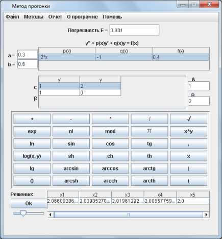 | 3. После этого, в поле, расположенном внизу экранной формы, появится значение искомого интеграла. |
 |
4. После того, как вы получили ответ, можно просмотреть график трапеций, по сумме площадей которых считается интергал. Для этого нужно нажать кнопку, расположенную под решением, в самом низу экранной формы - "Посмотреть график". Появится окно, показанное слева. Бегунок, расположенный вверху экранной формы увеличивает/уменьшает размер клеток сетки. |
 |
5. После того, как вы получили ответ, можно просмотреть отчет, где предоставлено поэтапное решение. Для этого необходимо в главном меню программы, расположенном на верху экранной формы выбрать пункт "Отчет/Просмотр отчета". Вы увидите окно, расположенное слева. Также можно сохранить этот отчет нажав кнопку главного меню "Отчет/Сохранить отчет". |
| 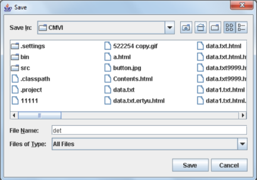 | 6. Если решение примера может пригодится вам в будущем, вы можете сохранить его с помощью конпки меню "Файл/Сохранить". В окне, которое появится(оно показано на рисунке слева) необходимо выбрать папку, в которую он сохранится и написать название. |